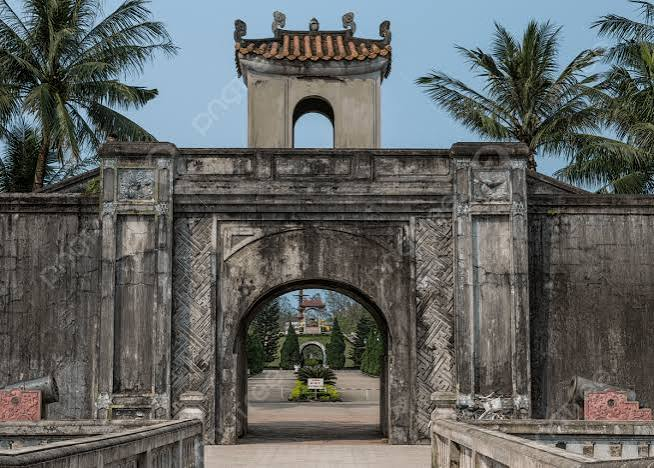

Di tích lịch sử đặc biệt - Dấu ấn lịch sử của quê hương Quảng Trị
Thành cổ Quảng Trị nằm ở phường Quảng Trị, tỉnh Quảng Trị. Đây là một di tích lịch sử nổi tiếng, gắn liền với nhiều sự kiện quan trọng trong lịch sử đấu tranh bảo vệ Tổ quốc.
Thành được xây dựng dưới triều Nguyễn vào đầu thế kỉ XIX. Ban đầu, công trình được xây bằng đất, sau đó được xây dựng lại bằng gạch với kiến trúc thành lũy kiên cố.
Ngày nay, Thành cổ Quảng Trị là nơi tưởng niệm những người đã hy sinh vì độc lập, tự do của đất nước và là địa điểm giáo dục truyền thống lịch sử cho các thế hệ.
Thành cổ Quảng Trị được xây dựng vào năm 1809 dưới thời vua Gia Long. Đến năm 1837, dưới triều vua Minh Mạng, thành được xây dựng lại bằng gạch với quy mô và kiến trúc kiên cố hơn.
Năm 1972, Thành cổ Quảng Trị trở thành địa điểm diễn ra cuộc chiến đấu kéo dài 81 ngày đêm. Sự kiện này đã trở thành một dấu mốc quan trọng trong lịch sử đấu tranh của dân tộc Việt Nam.
Thành cổ Quảng Trị là biểu tượng của lòng yêu nước, tinh thần kiên cường và sự hy sinh của các thế hệ đi trước. Di tích còn là nơi để người dân và du khách đến dâng hương, tưởng niệm.

Tìm hiểu thêm về lịch sử, văn hóa và các di tích của tỉnh Quảng Trị.
Truy cập website →Khám phá các địa điểm du lịch và di tích lịch sử trên cả nước.
Truy cập website →